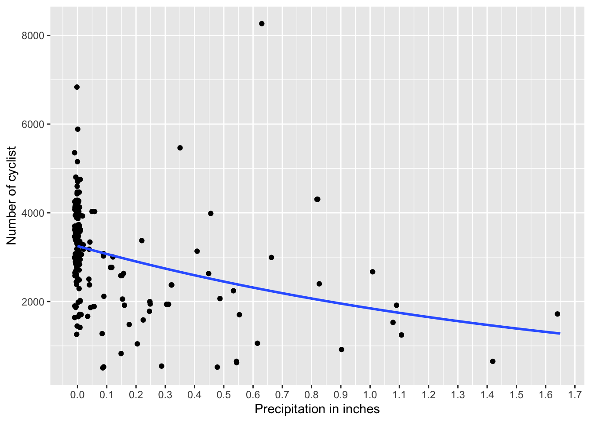
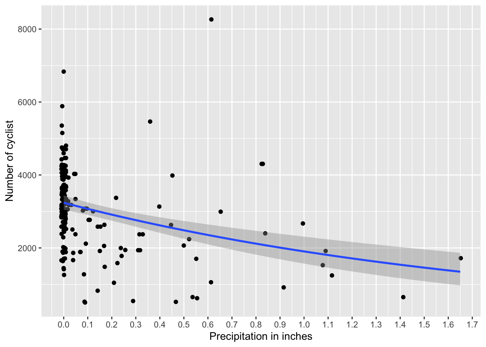
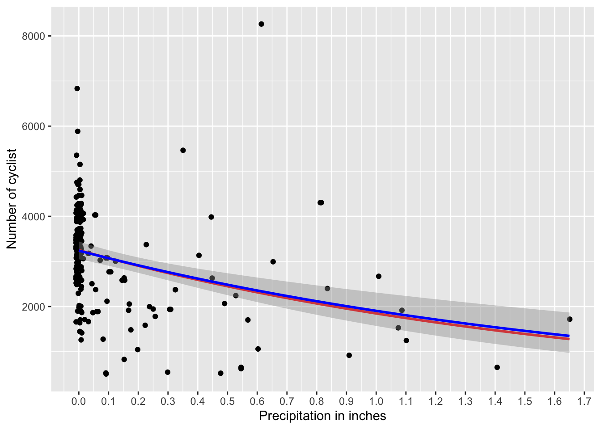

Chapter19 Poisson Regression
A poisson regression is used when the dependent variable is a count variable, that is, the number of events that occur in a fixed period of time. The Poisson distribution is used as a probability distribution and the log function is used as a link function. The model is called Poisson Regression.
\[\log\left(\lambda_i\right)=\beta_0+\beta_1X_i\] where the distribution is a Poisson with \(y_i\sim Poisson\left(\lambda_i\right)\).
Here let use the data from the number of accidents in a city and the number of cars in the city.
- Brooklyn_Bridge: The number cyclist on the Brooklyn Bridge on each day.
- Precipitation = The precipitation in inches on that day
| Date | Day | High_Tem_F | Low_Temp_F | Precipitation | Brooklyn_Bridge | Manhattan_Bridge | Williamsburg_Bridge | Queensboro_Bridge | Total |
|---|---|---|---|---|---|---|---|---|---|
| 1-Apr | Friday | 78.1 | 66 | 0.01 | 1.7e+03 | 3.13e+03 | 4.12e+03 | 2.55e+03 | 1.15e+04 |
| 2-Apr | Saturday | 55 | 48.9 | 0.15 | 827 | 1.65e+03 | 2.56e+03 | 1.88e+03 | 6.92e+03 |
| 3-Apr | Sunday | 39.9 | 34 | 0.09 | 526 | 1.23e+03 | 1.7e+03 | 1.31e+03 | 4.76e+03 |
| 4-Apr | Monday | 44.1 | 33.1 | 0.47 | 521 | 1.07e+03 | 1.44e+03 | 1.31e+03 | 4.34e+03 |
| 5-Apr | Tuesday | 42.1 | 26.1 | 0 | 1.42e+03 | 2.62e+03 | 3.08e+03 | 2.36e+03 | 9.47e+03 |
| 6-Apr | Wednesday | 45 | 30 | 0 | 1.88e+03 | 3.33e+03 | 3.86e+03 | 2.85e+03 | 1.19e+04 |
19.1 Visualize the data
- The data is not normally distributed.
- The data is a count variable.
- The regression line is not linear and is count (number of cylcist)
- The 95% confidence interval is shown in the graph.
ggplot(NY, aes(x=Precipitation, y=Brooklyn_Bridge))+
geom_jitter(width=0.01, height = 0.1)+ # point represents a count of number of cyclist for a specific day
geom_smooth(method="glm", method.args=list(family="poisson"), se=T)+
xlab("Precipitation in inches")+
ylab("Number of cyclist")+
scale_x_continuous(breaks = seq(0, 2, by = 0.1))
19.2 Creating a Poisson model
##
## Call:
## glm(formula = Brooklyn_Bridge ~ Precipitation, family = poisson,
## data = NY)
##
## Coefficients:
## Estimate Std. Error z value Pr(>|z|)
## (Intercept) 8.086430 0.001378 5869.0 <2e-16 ***
## Precipitation -0.565548 0.006023 -93.9 <2e-16 ***
## ---
## Signif. codes: 0 '***' 0.001 '**' 0.01 '*' 0.05 '.' 0.1 ' ' 1
##
## (Dispersion parameter for poisson family taken to be 1)
##
## Null deviance: 91743 on 197 degrees of freedom
## Residual deviance: 81450 on 196 degrees of freedom
## (17 observations deleted due to missingness)
## AIC: 83389
##
## Number of Fisher Scoring iterations: 519.3 Overdispersion in a Poisson model
The Poisson model assumes that the mean and variance are equal. If the variance is greater than the mean, then the model is overdispersed. In this case, we will use the function dispersiontest from the package AER to test for overdispersion. The function will return the dispersion parameter and the p-value. If the p-value is less than 0.05, then there is overdispersion.
Testing for overdispersion of Poisson model. In this case the model is highly obverdisperded. The dispersion is 418 and the p-value is p < 0.001.
##
## Overdispersion test
##
## data: NY_model
## z = 4.8057, p-value = 7.71e-07
## alternative hypothesis: true dispersion is greater than 1
## sample estimates:
## dispersion
## 418.239319.4 Negative binomial regression
A negative binomial regression is used when the dependent variable is a count variable and that the data suggests overdipersion. Overdispersion is when the variance is greater than the mean. The Poisson distribution is used as a probability distribution and the log function is used as a link function. The model is called Negative Binomial Regression.
\[\log\left(\lambda_i\right)=\beta_0+\beta_1X_i\] where the distribution is a negative binomial with \(y_i\sim NegBinomial\left(\lambda_i\right)\).
We will start by calculating the mean and vaiance of the above data set and detemrine if there is overdisperion
The function required dispersiontest is available in the package AER. The function will return the dispersion parameter and the p-value. If the p-value is less than 0.05, then there is overdispersion.
Note that the alpha is very large and the p-value is less than 0.05, which indicates that there is overdispersion. We will now create the negative binomial model. We will use the MASS library and the function glm.nb to create the model. The function is used to create a negative binomial model. The function is used in the same way as the glm function, but the family is set to negative binomial.
19.5 Visualization of the negative binomial model
The graph shows the fitted line of the negative binomial model. The graph also shows the 95% confidence interval of the fitted line. The graph also shows the data points and the jitter of the data points. The graph also shows the x-axis and y-axis labels.
library(MASS)
ggplot(NY, aes(x=Precipitation, y=Brooklyn_Bridge))+
geom_jitter(width=0.01, height = 0.1)+
geom_smooth(method="glm.nb", se=T)+
xlab("Precipitation in inches")+
ylab("Number of cyclist")+
scale_x_continuous(breaks = seq(0, 2, by = 0.1))
19.6 Creating the negative binomial model
NY_model_nb=MASS::glm.nb(Brooklyn_Bridge ~ Precipitation, data=NY)
summary(NY_model_nb) # note that theta is a the measure of dispersion##
## Call:
## MASS::glm.nb(formula = Brooklyn_Bridge ~ Precipitation, data = NY,
## init.theta = 6.243688849, link = log)
##
## Coefficients:
## Estimate Std. Error z value Pr(>|z|)
## (Intercept) 8.08310 0.03105 260.33 < 2e-16 ***
## Precipitation -0.53141 0.10670 -4.98 6.35e-07 ***
## ---
## Signif. codes: 0 '***' 0.001 '**' 0.01 '*' 0.05 '.' 0.1 ' ' 1
##
## (Dispersion parameter for Negative Binomial(6.2437) family taken to be 1)
##
## Null deviance: 226.06 on 197 degrees of freedom
## Residual deviance: 203.38 on 196 degrees of freedom
## (17 observations deleted due to missingness)
## AIC: 3360.2
##
## Number of Fisher Scoring iterations: 1
##
##
## Theta: 6.244
## Std. Err.: 0.613
##
## 2 x log-likelihood: -3354.199We interpret the results as follows
- The precipitation has a negative effect on the number of cyclist (negative sign). With precipitation (exp(coef) = -0.53) which states that there is 47% decrease in the number of cyclist for each inch of precipitation.
We can reconvert the coefficient to a positive value by taking the exponential of the coefficient.
## (Intercept) Precipitation
## 3239.274773 0.587776In this case to evaluate overdispersion in the negative binomial model we use the function odTest from the package pscl. The function will return the dispersion parameter and the p-value. If the p-value is less than 0.05, then there is overdispersion.
## Likelihood ratio test of H0: Poisson, as restricted NB model:
## n.b., the distribution of the test-statistic under H0 is non-standard
## e.g., see help(odTest) for details/references
##
## Critical value of test statistic at the alpha= 0.05 level: 2.7055
## Chi-Square Test Statistic = 80031.1386 p-value = < 2.2e-1619.6.1 Comparing dispersion models
Comparing the dispersion of a Poisson and a Negative binomial model. The approach is to use a likelyhood ratio test. Note the fitted log-likelihood of the NB model (-1677.1) is much large/better than the Poisson model (-41692.7). The p-value is less than 0.05, thus the negative binomial model is better than the Poisson model.
# Calculate the likelihood ratio statistic
likelihood_ratio <- 2 * (logLik(NY_model_nb) - logLik(NY_model))
logLik(NY_model_nb) # the log likelihood of the negative binomial model## 'log Lik.' -1677.1 (df=3)## 'log Lik.' -41692.67 (df=2) # Degrees of freedom (df) is the difference in the number of parameters
df <- length(coef(NY_model_nb)) - length(coef(NY_model))
# Perform the chi-squared test
p_value <- 1 - pchisq(likelihood_ratio, df)
# Print the p-value
print(p_value)## 'log Lik.' 0 (df=3)19.6.2 Alternative approach to compare the Poisson and the negative binomial model.
You can also use the function lrtest from the package lmtest to perform the likelihood ratio test. The function will return the likelihood ratio test statistic and the p-value. If the p-value is less than 0.05, then the negative binomial model is better than the Poisson model.
| #Df | LogLik | Df | Chisq | Pr(>Chisq) |
|---|---|---|---|---|
| 3 | -1.68e+03 | |||
| 2 | -4.17e+04 | -1 | 8e+04 | 0 |
19.7 Overlaying the Poisson and the Negative binomial models
In this case the Poisson model is shown in red and the negative binomial model is shown in blue. The graph shows the fitted line of the Poisson model and the negative binomial model. The graph also shows the 95% confidence interval of the fitted line. The graph also shows the data points and the jitter of the data points. The graph also shows the x-axis and y-axis labels. There is a statistical diference between the models, however the fitted lines are very similar and consequently in this case the differences may not be important.
ggplot(NY, aes(x=Precipitation, y=Brooklyn_Bridge))+
geom_jitter(width=0.01, height = 0.1)+
geom_smooth(method="glm", method.args=list(family="poisson"), se=T, color="red")+
geom_smooth(method="glm.nb", se=T, color="blue")+
xlab("Precipitation in inches")+
ylab("Number of cyclist")+
scale_x_continuous(breaks = seq(0, 2, by = 0.1))